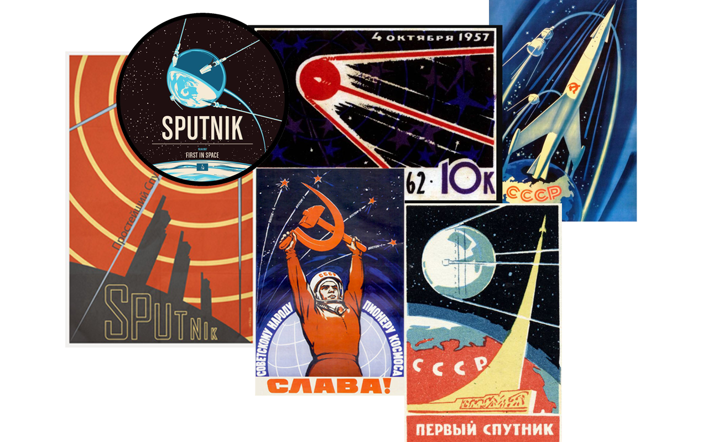
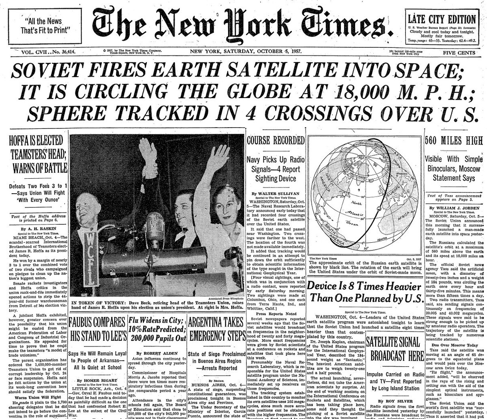
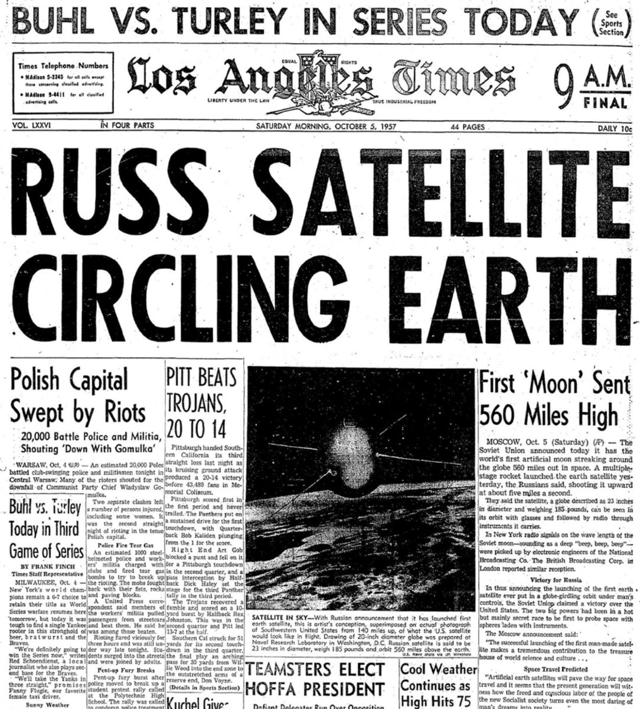

SPACE RACE
How It Began
Soviet Union
takes the lead

U.S. Panics!



One year later...
The U.S. government establishes the National Aeronautics and Space Administration,
or NASA for short.
Поехали!
Yuri Gagarin
first person in space
We choose to go to the
MOON
Gemini & Apollo
BASICS
Rocket Launch
- Thrust energy >> rocket weight
- Two or more stages
- Parabolic trajectory
Orbital Mechanics
- Orbit above 160km (LEO)
- Craft velocity: ~28128 km/h
- More height -> less speed needed
Gemini Missions
- Reentry Module / Heat Shield
- Orbital Maneuvers
- Rendezvous
- Docking
- EVA